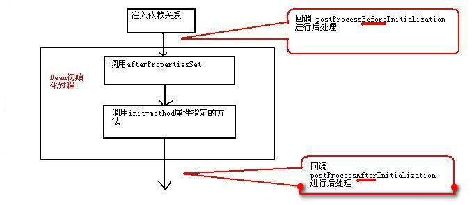

Spring简介
Spring框架由Rod Johnson开发，2004年发布了Spring框架的第一版。Spring是一个从实际开发中抽取出来的框架，因此它完成了大量开发中的通用步骤，留给开发者的仅仅是与特定应用相关的部分，从而大大提高了企业应用的开发效率。
Spring总结起来优点如下：
- 低侵入式设计，代码的污染极低。
- 独立于各种应用服务器，基于Spring框架的应用，可以真正实现Write Once，Run Anywhere的承诺。
- Spring的IoC容器降低了业务对象替换的复杂性，提高了组件之间的解耦。
- Spring的AOP支持允许将一些通用任务如安全、事务、日志等进行集中式管理，从而提供了更好的复用。
- Spring的ORM和DAO提供了与第三方持久层框架的良好整合，并简化了底层的数据库访问。
- Spring的高度开放性，并不强制应用完全依赖于Spring，开发者可自由选用Spring框架的部分或全部。
Spring框架的组成结构图如下所示：

Spring的核心机制
管理Bean
程序主要是通过Spring容器来访问容器中的Bean，ApplicationContext是Spring容器最常用的接口，该接口有如下两个实现类：
- ClassPathXmlApplicationContext: 从类加载路径下搜索配置文件，并根据配置文件来创建Spring容器。
- FileSystemXmlApplicationContext: 从文件系统的相对路径或绝对路径下去搜索配置文件，并根据配置文件来创建Spring容器。
public class BeanTest{
public static void main(String args[]) throws Exception{
ApplicationContext ctx = new ClassPathXmlApplicationContext("beans.xml");
Person p = ctx.getBean("person", Person.class);
p.say();
}
}
Eclipse使用Spring
在Eclipse等IDE工具中，用户可以自建User Library，然后把Spring的Jar包都放入其中，当然也可以将Jar包直接放在项目的/WEB-INF/lib目录下，但是如果使用User Library，在项目发布时，需要将用户库所引用的Jar文件随应用一起发布，就是将User Library所使用的Jar复制到/WEB-INF/lib目录下，这是因为对于一个Web应用，Eclipse部署Web应用时不会将用户库的Jar文件复制到/WEB-INF/lib下，需要手动复制。
依赖注入
Spring框架的核心功能有两个：
- Spring容器作为超级大工厂，负责创建、管理所有的Java对象，这些Java对象被称为Bean。
- Spring容器管理容器中Bean之间的依赖关系，Spring使用一种被称为"依赖注入"的方式来管理Bean之间的依赖关系。
使用依赖注入，不仅可以为Bean注入普通的属性值，还可以注入其他Bean的引用。依赖注入是一种优秀的解耦方式，其可以让Bean以配置文件组织在一起，而不是以硬编码的方式耦合在一起。
理解依赖注入
Rod Johnson是第一个高度重视以配置文件来管理Java实例的协作关系的人，他给这种方式起了一个名字：控制反转（Inverse of Control，IoC）。后来Martine Fowler为这种方式起了另一个名称：依赖注入（Dependency Injection），因此不管是依赖注入，还是控制反转，其含义完全相同。当某个Java对象（调用者）需要调用另一个Java对象（被依赖对象）的方法时，在传统模式下通常有两种做法：
- 原始做法: 调用者主动创建被依赖对象，然后再调用被依赖对象的方法。
- 简单工厂模式: 调用者先找到被依赖对象的工厂，然后主动通过工厂去获取被依赖对象，最后再调用被依赖对象的方法。
注意上面的主动二字，这必然会导致调用者与被依赖对象实现类的硬编码耦合，非常不利于项目升级的维护。使用Spring框架之后，调用者无需主动获取被依赖对象，调用者只要被动接受Spring容器为调用者的成员变量赋值即可，由此可见，使用Spring后，调用者获取被依赖对象的方式由原来的主动获取，变成了被动接受——所以Rod Johnson称之为控制反转。
另外从Spring容器的角度来看，Spring容器负责将被依赖对象赋值给调用者的成员变量——相当于为调用者注入它依赖的实例，因此Martine Fowler称之为依赖注入。
设值注入
设值注入是指IoC容器通过成员变量的setter方法来注入被依赖对象。这种注入方式简单、直观，因而在Spring的依赖注入里大量使用。
构造注入
利用构造器来设置依赖关系的方式，被称为构造注入。通俗来说，就是驱动Spring在底层以反射方式执行带指定参数的构造器，当执行带参数的构造器时，就可利用构造器参数对成员变量执行初始化——这就是构造注入的本质。
两种注入方式的对比
设值注入有如下优点：
- 与传统的JavaBean的写法更相似，程序开发人员更容易理解、接受。通过setter方法设定依赖关系显得更加直观、自然。
- 对于复杂的依赖关系，如果采用构造注入，会导致构造器过于臃肿，难以阅读。Spring在创建Bean实例时，需要同时实例化其依赖的全部实例，因而导致性能下降。而使用设值注入，则能避免这些问题。
- 尤其在某些成员变量可选的情况下，多参数的构造器更加笨重。
构造注入优势如下：
- 构造注入可以在构造器中决定依赖关系的注入顺序，优先依赖的优先注入。
- 对于依赖关系无需变化的Bean，构造注入更有用处。因为没有setter方法，所有的依赖关系全部在构造器内设定，无须担心后续的代码对依赖关系产生破坏。
- 依赖关系只能在构造器中设定，则只有组件的创建者才能改变组件的依赖关系，对组件的调用者而言，组件内部的依赖关系完全透明，更符合高内聚的原则。
注意：
建议采用设值注入为主，构造注入为辅的注入策略。对于依赖关系无须变化的注入，尽量采用构造注入；而其他依赖关系的注入，则考虑采用设值注入。
Spring容器中的Bean
对于开发者来说，开发者使用Spring框架主要是做两件事：①开发Bean；②配置Bean。对于Spring框架来说，它要做的就是根据配置文件来创建Bean实例，并调用Bean实例的方法完成"依赖注入"——这就是所谓IoC的本质。
容器中Bean的作用域
当通过Spring容器创建一个Bean实例时，不仅可以完成Bean实例的实例化，还可以为Bean指定特定的作用域。Spring支持如下五种作用域：
- singleton: 单例模式，在整个Spring IoC容器中，singleton作用域的Bean将只生成一个实例。
- prototype: 每次通过容器的getBean()方法获取prototype作用域的Bean时，都将产生一个新的Bean实例。
- request: 对于一次HTTP请求，request作用域的Bean将只生成一个实例，这意味着，在同一次HTTP请求内，程序每次请求该Bean，得到的总是同一个实例。只有在Web应用中使用Spring时，该作用域才真正有效。
- session：该作用域将 bean 的定义限制为 HTTP 会话。 只在web-aware Spring ApplicationContext的上下文中有效。
- global session: 每个全局的HTTP Session对应一个Bean实例。在典型的情况下，仅在使用portlet context的时候有效，同样只在Web应用中有效。
如果不指定Bean的作用域，Spring默认使用singleton作用域。prototype作用域的Bean的创建、销毁代价比较大。而singleton作用域的Bean实例一旦创建成果，就可以重复使用。因此，应该尽量避免将Bean设置成prototype作用域。
使用自动装配注入合作者Bean
Spring能自动装配Bean与Bean之间的依赖关系，即无须使用ref显式指定依赖Bean，而是由Spring容器检查XML配置文件内容，根据某种规则，为调用者Bean注入被依赖的Bean。
Spring自动装配可通过<beans/>元素的default-autowire属性指定，该属性对配置文件中所有的Bean起作用；也可通过对<bean/>元素的autowire属性指定，该属性只对该Bean起作用。
autowire和default-autowire可以接受如下值：
no: 不使用自动装配。Bean依赖必须通过ref元素定义。这是默认配置，在较大的部署环境中不鼓励改变这个配置，显式配置合作者能够得到更清晰的依赖关系。byName: 根据setter方法名进行自动装配。Spring容器查找容器中全部Bean，找出其id与setter方法名去掉set前缀，并小写首字母后同名的Bean来完成注入。如果没有找到匹配的Bean实例，则Spring不会进行任何注入。byType: 根据setter方法的形参类型来自动装配。Spring容器查找容器中的全部Bean，如果正好有一个Bean类型与setter方法的形参类型匹配，就自动注入这个Bean；如果找到多个这样的Bean，就抛出一个异常；如果没有找到这样的Bean，则什么都不会发生，setter方法不会被调用。constructor: 与byType类似，区别是用于自动匹配构造器的参数。如果容器不能恰好找到一个与构造器参数类型匹配的Bean，则会抛出一个异常。autodetect: Spring容器根据Bean内部结构，自行决定使用constructor或byType策略。如果找到一个默认的构造函数，那么就会应用byType策略。
当一个Bean既使用自动装配依赖，又使用ref显式指定依赖时，则显式指定的依赖覆盖自动装配依赖；对于大型的应用，不鼓励使用自动装配。虽然使用自动装配可减少配置文件的工作量，但大大将死了依赖关系的清晰性和透明性。依赖关系的装配依赖于源文件的属性名和属性类型，导致Bean与Bean之间的耦合降低到代码层次，不利于高层次解耦。
<!--通过设置可以将Bean排除在自动装配之外--> <bean id="" autowire-candidate="false"/> <!--除此之外，还可以在beans元素中指定，支持模式字符串，如下所有以abc结尾的Bean都被排除在自动装配之外--> <beans default-autowire-candidates="*abc"/>
创建Bean的3种方式
使用构造器创建Bean实例
使用构造器来创建Bean实例是最常见的情况，如果不采用构造注入，Spring底层会调用Bean类的无参数构造器来创建实例，因此要求该Bean类提供无参数的构造器。
采用默认的构造器创建Bean实例，Spring对Bean实例的所有属性执行默认初始化，即所有的基本类型的值初始化为0或false；所有的引用类型的值初始化为null。
使用静态工厂方法创建Bean
使用静态工厂方法创建Bean实例时，class属性也必须指定，但此时class属性并不是指定Bean实例的实现类，而是静态工厂类，Spring通过该属性知道由哪个工厂类来创建Bean实例。
除此之外，还需要使用factory-method属性来指定静态工厂方法，Spring将调用静态工厂方法返回一个Bean实例，一旦获得了指定Bean实例，Spring后面的处理步骤与采用普通方法创建Bean实例完全一样。如果静态工厂方法需要参数，则使用<constructor-arg.../>元素指定静态工厂方法的参数。
调用实例工厂方法创建Bean
实例工厂方法与静态工厂方法只有一个不同：调用静态工厂方法只需使用工厂类即可，而调用实例工厂方法则需要工厂实例。使用实例工厂方法时，配置Bean实例的<bean.../>元素无须class属性，配置实例工厂方法使用factory-bean指定工厂实例。
采用实例工厂方法创建Bean的<bean.../>元素时需要指定如下两个属性：
- factory-bean: 该属性的值为工厂Bean的id。
- factory-method: 该属性指定实例工厂的工厂方法。
若调用实例工厂方法时需要传入参数，则使用<constructor-arg.../>元素确定参数值。
协调作用域不同步的Bean
当singleton作用域的Bean依赖于prototype作用域的Bean时，会产生不同步的现象，原因是因为当Spring容器初始化时，容器会预初始化容器中所有的singleton Bean，由于singleton Bean依赖于prototype Bean，因此Spring在初始化singleton Bean之前，会先创建prototypeBean——然后才创建singleton Bean，接下里将prototype Bean注入singleton Bean。
解决不同步的方法有两种：
- 放弃依赖注入: singleton作用域的Bean每次需要prototype作用域的Bean时，主动向容器请求新的Bean实例，即可保证每次注入的
prototype Bean实例都是最新的实例。 - 利用方法注入: 方法注入通常使用lookup方法注入，使用lookup方法注入可以让Spring容器重写容器中Bean的抽象或具体方法，返回查找容器中其他Bean的结果，被查找的Bean通常是一个
non-singleton Bean。Spring通过使用JDK动态代理或cglib库修改客户端的二进制码，从而实现上述要求。
建议采用第二种方法，使用方法注入。为了使用lookup方法注入，大致需要如下两步：
- 将调用者Bean的实现类定义为抽象类，并定义一个抽象方法来获取被依赖的Bean。
- 在
<bean.../>元素中添加<lookup-method.../>子元素让Spring为调用者Bean的实现类实现指定的抽象方法。
注意：
Spring会采用运行时动态增强的方式来实现
<lookup-method.../>元素所指定的抽象方法，如果目标抽象类实现过接口，Spring会采用JDK动态代理来实现该抽象类，并为之实现抽象方法；如果目标抽象类没有实现过接口，Spring会采用cglib实现该抽象类，并为之实现抽象方法。Spring4.0的spring-core-xxx.jar包中已经集成了cglib类库。
两种后处理器
Spring提供了两种常用的后处理器：
- Bean后处理器: 这种后处理器会对容器中Bean进行后处理，对Bean进行额外加强。
- 容器后处理器: 这种后处理器会对IoC容器进行后处理，用于增强容器功能。
Bean后处理器
Bean后处理器是一种特殊的Bean，这种特殊的Bean并不对外提供服务，它甚至可以无须id属性，它主要负责对容器中的其他Bean执行后处理，例如为容器中的目标Bean生成代理等，这种Bean称为Bean后处理器。Bean后处理器会在Bean实例创建成功之后，对Bean实例进行进一步的增强处理。Bean后处理器必须实现BeanPostProcessor接口，同时必须实现该接口的两个方法。
Object postProcessBeforeInitialization(Object bean, String name) throws BeansException: 该方法的第一个参数是系统即将进行后处理的Bean实例，第二个参数是该Bean的配置idObject postProcessAfterinitialization(Object bean, String name) throws BeansException: 该方法的第一个参数是系统即将进行后处理的Bean实例，第二个参数是该Bean的配置id
容器中一旦注册了Bean后处理器，Bean后处理器就会自动启动，在容器中每个Bean创建时自动工作，Bean后处理器两个方法的回调时机如下图：

注意一点，如果使用BeanFactory作为Spring容器，则必须手动注册Bean后处理器，程序必须获取Bean后处理器实例，然后手动注册。
BeanPostProcessor bp = (BeanPostProcessor)beanFactory.getBean("bp");
beanFactory.addBeanPostProcessor(bp);
Person p = (Person)beanFactory.getBean("person");
容器后处理器
Bean后处理器负责处理容器中的所有Bean实例，而容器后处理器则负责处理容器本身。容器后处理器必须实现BeanFactoryPostProcessor接口，并实现该接口的一个方法postProcessBeanFactory(ConfigurableListableBeanFactory beanFactory)实现该方法的方法体就是对Spring容器进行的处理，这种处理可以对Spring容器进行自定义扩展，当然也可以对Spring容器不进行任何处理。
类似于BeanPostProcessor，ApplicationContext可自动检测到容器中的容器后处理器，并且自动注册容器后处理器。但若使用BeanFactory作为Spring容器，则必须手动调用该容器后处理器来处理BeanFactory容器。
Spring的"零配置"支持
搜索Bean类
Spring提供如下几个Annotation来标注Spring Bean：
@Component: 标注一个普通的Spring Bean类@Controller: 标注一个控制器组件类@Service: 标注一个业务逻辑组件类@Repository: 标注一个DAO组件类
在Spring配置文件中做如下配置，指定自动扫描的包：
<context:component-scan base-package="edu.shu.spring.domain"/>
使用@Resource配置依赖
@Resource位于javax.annotation包下，是来自JavaEE规范的一个Annotation，Spring直接借鉴了该Annotation，通过使用该Annotation为目标Bean指定协作者Bean。使用@Resource与<property.../>元素的ref属性有相同的效果。
@Resource不仅可以修饰setter方法，也可以直接修饰实例变量，如果使用@Resource修饰实例变量将会更加简单，此时Spring将会直接使用JavaEE规范的Field注入，此时连setter方法都可以不要。
使用@PostConstruct和@PreDestroy定制生命周期行为
@PostConstruct和@PreDestroy同样位于javax.annotation包下，也是来自JavaEE规范的两个Annotation，Spring直接借鉴了它们，用于定制Spring容器中Bean的生命周期行为。它们都用于修饰方法，无须任何属性。其中前者修饰的方法时Bean的初始化方法；而后者修饰的方法时Bean销毁之前的方法。
Spring4.0增强的自动装配和精确装配
Spring提供了@Autowired注解来指定自动装配，@Autowired可以修饰setter方法、普通方法、实例变量和构造器等。当使用@Autowired标注setter方法时，默认采用byType自动装配策略。在这种策略下，符合自动装配类型的候选Bean实例常常有多个，这个时候就可能引起异常，为了实现精确的自动装配，Spring提供了@Qualifier注解，通过使用@Qualifier，允许根据Bean的id来执行自动装配。
Spring的AOP
为什么需要AOP
AOP（Aspect Orient Programming）也就是面向切面编程，作为面向对象编程的一种补充，已经成为一种比较成熟的编程方式。其实AOP问世的时间并不太长，AOP和OOP互为补充，面向切面编程将程序运行过程分解成各个切面。
AOP专门用于处理系统中分布于各个模块（不同方法）中的交叉关注点的问题，在JavaEE应用中，常常通过AOP来处理一些具有横切性质的系统级服务，如事务管理、安全检查、缓存、对象池管理等，AOP已经成为一种非常常用的解决方案。
使用AspectJ实现AOP
AspectJ是一个基于Java语言的AOP框架，提供了强大的AOP功能，其他很多AOP框架都借鉴或采纳其中的一些思想。其主要包括两个部分：一个部分定义了如何表达、定义AOP编程中的语法规范，通过这套语法规范，可以方便地用AOP来解决Java语言中存在的交叉关注点的问题；另一个部分是工具部分，包括编译、调试工具等。
AOP实现可分为两类：
- 静态AOP实现: AOP框架在编译阶段对程序进行修改，即实现对目标类的增强，生成静态的AOP代理类，以AspectJ为代表。
- 动态AOP实现: AOP框架在运行阶段动态生成AOP代理，以实现对目标对象的增强，以Spring AOP为代表。
一般来说，静态AOP实现具有较好的性能，但需要使用特殊的编译器。动态AOP实现是纯Java实现，因此无须特殊的编译器，但是通常性能略差。
AOP的基本概念
关于面向切面编程的一些术语：
- 切面（Aspect）: 切面用于组织多个Advice，Advice放在切面中定义。
- 连接点（Joinpoint）: 程序执行过程中明确的点，如方法的调用，或者异常的抛出。在Spring AOP中，连接点总是方法的调用。
- 增强处理（Advice）: AOP框架在特定的切入点执行的增强处理。处理有"around"、"before"和"after"等类型
- 切入点（Pointcut）: 可以插入增强处理的连接点。简而言之，当某个连接点满足指定要求时，该连接点将被添加增强处理，该连接点也就变成了切入点。
Spring的AOP支持
Spring中的AOP代理由Spring的IoC容器负责生成、管理，其依赖关系也由IoC容器负责管理。
为了在应用中使用@AspectJ支持，Spring需要添加三个库：
aspectjweaver.jaraspectjrt.jaraopalliance.jar
并在Spring配置文件中做如下配置：
<!--启动@AspectJ支持-->
<aop:aspectj-autoproxy/>
<!--指定自动搜索Bean组件、自动搜索切面类-->
<context:component-scan base-package="edu.shu.sprint.service">
<context:include-filter type="annotation" expression="org.aspectj.lang.annotation.Aspect"/>
</context:component-scan>
来源：http://codepub.cn/2015/06/21/Basic-knowledge-summary-of-Spring/


点我分享笔记
笔记需要是本篇文章的内容扩展！